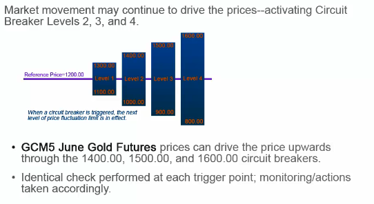
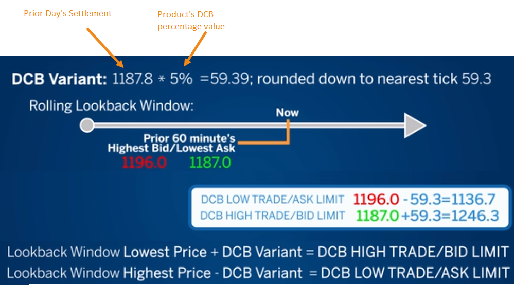

市场完整性
Market Integrity 防止价格偏离正常值太远:
- 价格保护价格区间
- 熔断机制
Price Banding¶
Price Banding only prevents a trader from bidding or offering at prices that appear to be unrealistic and potentially damaging to the marketplace
Price Band Variation (PBV), 控制限价的范围， 买的下限， 卖的上限， 当交易价格变换后， PBVR 会重新计算， Arkenstone 会拒绝所有超过范围的单子。
这个参考的价格：
- 盘前盘后， 是他 settlement price
- Indicative Opening Price 价格
- 盘中，最后成交价格
- 如果都没有 用最后 settlement 价格
- 在市场紧急情况下....
规则：
- 突发情况下， Aarkenstone 可以临时关闭这个规则， 在市场大波动行情下
- 这里参数可以在日内被调整
Market Limit¶
Price Banding 不会限制 market 单子输入， 一个是价单子，仅仅会匹配最后报价， 剩余以limit 进入book。
Stop¶
不会影响， 在输入时候就校验过。
短路设计¶
短路区间根据不同产品，有不同区间， 也可以动态配置。
DCB Dynamic Circuit Breakers:
Formula: Previous Days settle * DCB percentage Value = DCB variant (rounded down to nearest tradable tick)
在市场开盘60分钟内有个回溯窗口， 用来计算最终的上下区间， 最高价格 + 比例作为上区间，最低价格 - 比例最为下区间。
市场和产品状态¶
Market and Instrument States， 包含品类， 和独立产品的状态
| 状态 | 描述 |
|---|---|
| Pre-Open | Earliest phase of Opening market state. Order Entry, modification, and cancel are allowed. No order matching; Mass Quote messages are not allowed. |
| Pre-Open - No Cancel | End of Pre-Open state. Order entry is allowed. Modification and cancellation are not allowed. |
| Opening | Brief intermediate state. Pre-Open orders are resolved following Indicative Opening Price (IOP) determination. Trades are sent. |
| Open | Start of continuous trading phase. Order matching begins. |
| Pause | Interruption of continuous trading. Only order cancellation is allowed. Order matching is not allowed. |
| Close - Not Final | End of day preparation for the next Pre-Open. Not final close for the date. This state allows a mid-session Pre-Open to be initiated. |
| Close - Final | Final Close for the date. Day orders are eliminated. |
| Post - Close | Allows GTC/GTD orders only placement, modification, and cancellation. No matching takes place and no action can be taken on non-GTC/GTD orders. |
| 状态 | 描述 |
|---|---|
| Pre-Open | 市场最早状态,Order Entry, modification, and cancel允许. 尚未匹配; Mass Quote不允许. |
| Pre-Open - No Cancel | End of Pre-Open state. 可以下单, 删除不允许. |
| Opening | Brief intermediate state. Pre-Open orders are resolved following Indicative Opening Price (IOP) determination. Trades are sent. |
| Open | 连续交易开始, 订单匹配开始 |
| Pause | 突发情况下交易终端. 只有单子撤销允许, 订单匹配中断 |
| Close - Not Final | End of day preparation for the next Pre-Open. Not final close for the date. This state allows a mid-session Pre-Open to be initiated. |
| Close - Final | Final Close for the date. Day orders are eliminated. |
| Post - Close | 只有 GTC/GTD orders 可以下，撤销. 订单匹配中断, 非GTC/GTD orders不允许修改 |